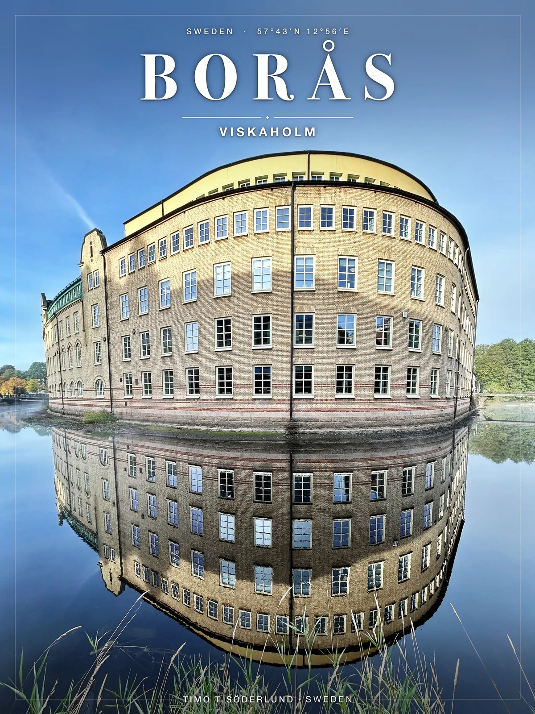

Viskaholm
Historic Textile Mill · Viskan River, Borås, Sweden
English
Bathed in clear Nordic sunlight, the iconic curved brick facade of Viskaholm rises above the Viskan river in central Borås, Sweden. Once a proud cornerstone of the city's textile industry, its rhythmic rows of windows now double in the still water below. Photographed and graded by Timo T Söderlund for Borås Poster Project 2026, this poster honors the architectural heritage of Boras, Sweden.
Svenska
Badande i klart nordiskt solljus reser sig Viskaholms ikoniska rundade tegelfasad över Viskan i centrala Borås. Den historiska byggnaden, som en gång var en stolthet i stadens textilindustri, speglas med sina karaktäristiska fönsterrader i det lugna vattnet nedanför. Fotograferad av Timo T Söderlund för Borås Poster Project 2026.
Photographer & Edition: Timo T Söderlund · Borås, Sweden (2026)